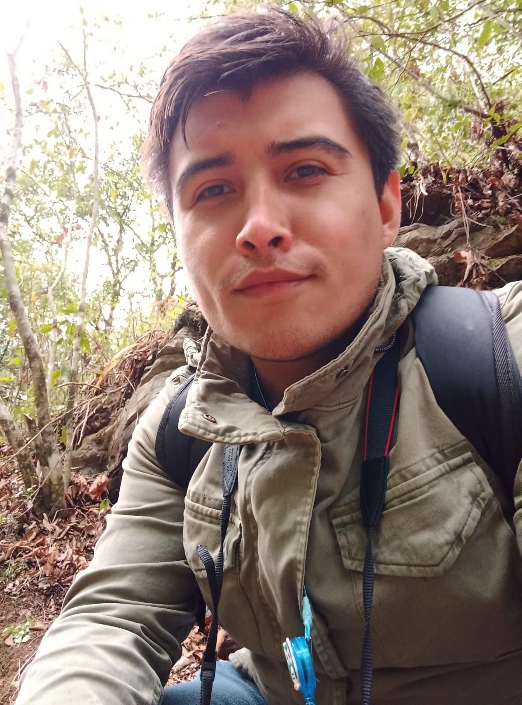

¡Hola! 👋
Think
deep.
Create
real.

Soy Brandon Ayala! | Marketing Automation Specialist
Soy alguien a quien le gusta entender las cosas antes de construirlas.
Me tomo el tiempo para pensar, cuestionar y explorar ideas a fondo — no para complicarlas, sino para hacerlas reales y útiles.
Lo que creo nace de la curiosidad, la intención y la necesidad de convertir ideas en algo que realmente funcione.
Muchas de mis mejores ideas han pasado por una pausa, una mirada al vacío…
y una gata caminando sobre el teclado.